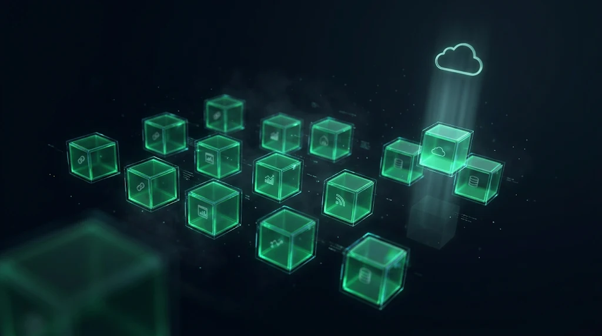

SmallGreen Cloud
讓每個人都能擁有自己的雲端服務——14 個可跑在自己帳號的開源小服務目錄
適合：想用小工具又不想把資料放在別人平台的個人、小團隊與中小企業
逛服務目錄
你可能正卡在這裡
短網址、流量分析、新聞聚合、知識庫、名片管理——好用的小工具都有開源版，但散在各處：哪些真的跑得起來？要花多少？資料放哪？不要了怎麼辦？每一個都要自己從頭評估。
這個系統怎麼解
SmallGreen 把篩選過的開源小服務整理成一個目錄：每個服務一張服務卡，寫明用途、適合誰、資源量級、證據等級與驗證日期，全部設計成部署在你自己的 Cloudflare 帳號、免費額度內運行。背後有一層部署契約與機械驗證支撐——怎樣算部署成功、怎麼乾淨移除，都查得到證據。
技術架構
- 14 個 catalogued 服務：FluxGate 生圖閘道、名片 MCP、TapCard 數位名片、NewsNow 新聞聚合、Sink 短網址、Second Brain 知識庫、serverless-dns 等
- 每個服務附服務卡：架構、部署需求、資料流向、限制，逐項可查
- 部署驗收與移除程序由機械檢查判定，留下可稽核證據
- 全部在 Cloudflare 免費層內 scale-to-zero，零常駐成本、零遙測
用了之後解決什麼
- 不用自己海選開源專案——目錄裡每個都篩過、跑過、標了證據等級
- 服務跑在你自己的帳號，資料與移除的控制權都在你手上
- 不要了照移除程序執行，帳號資源歸零，不留殘骸
怎麼開始
打開服務目錄，從用途與對象挑一個，照服務卡部署到自己的帳號。
逛服務目錄想學會用這套系統的方法
這個系統同時是課堂教材，對應的情境課程：
常見問題
跟自己去 GitHub 找開源專案差在哪？
目錄裡每個服務都實際部署驗證過，服務卡寫明資源量級、證據等級與限制；你省掉的是「能不能跑、要花多少、怎麼移除」的評估成本。
這些服務要付費嗎？
全部設計在 Cloudflare 免費額度內運行、scale-to-zero——沒有流量就沒有成本。你付的只有自己帳號的額度，超量與否自己看得到。
背後的部署契約是什麼角色？
支撐層，不是賣點。它讓「部署成功」與「乾淨移除」變成機械可檢查的事；定位是候選 conformance profile，不宣稱新標準。